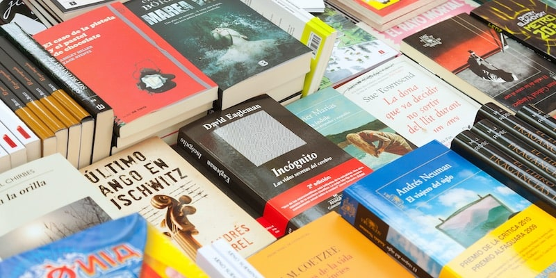
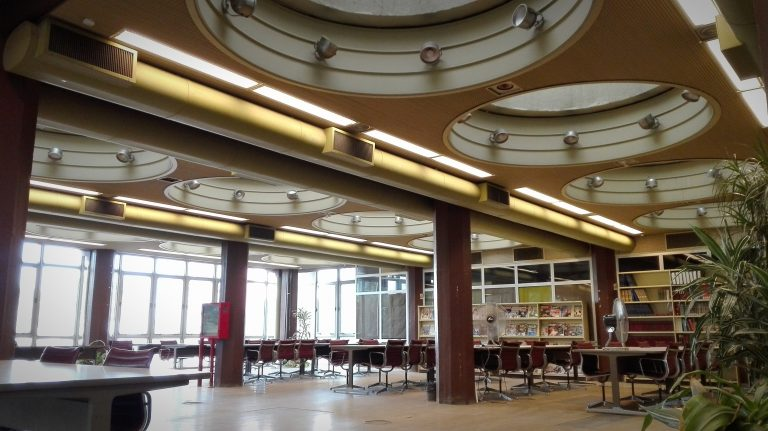
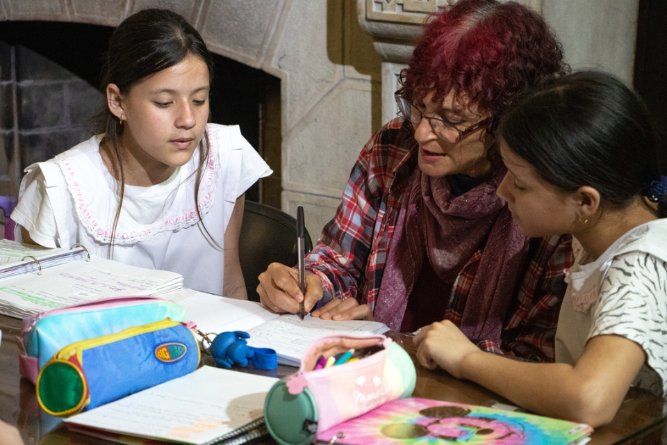
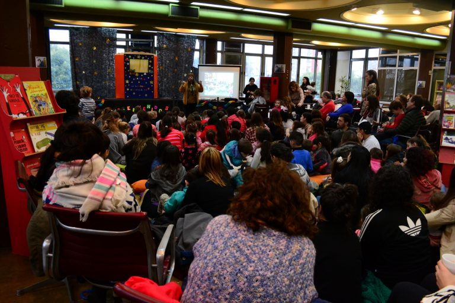

Socio Lector
Préstamo de Libros
Llevá novelas, textos escolares y literatura a tu casa. Contamos con una colección de más de 30.000 títulos para todas las edades.
Consultar catálogoSomos la Asociación Cultural Mariano Moreno una organización social sin fines de lucro. Desarrolla actividades artísticas y culturales en el sur del gran Buenos Aires desde agosto de 1932, cuando un grupo de vecinos y vecinas de Bernal y otras localidades cercanas fundaron una biblioteca popular.

Frente a la era digital y la falta de espacios de encuentro, la "Moreno" ofrece contención y educación libre. Queremos que cada pibe, joven y adulto mayor de Bernal tenga un lugar para estudiar, llevarse libros y hacer talleres, sosteniendo la biblioteca de forma autogestionada entre todos los vecinos.
Servicios y actividades comunitarias pensadas para el barrio de Bernal.

Llevá novelas, textos escolares y literatura a tu casa. Contamos con una colección de más de 30.000 títulos para todas las edades.
Consultar catálogo
Acompañamiento pedagógico gratuito para primaria y secundaria, brindado por voluntarios para que ningún pibe del barrio se quede atrás.
Inscribirse
Talleres artísticos, de oficios y culturales accesibles para todas las edades. Teatro, ajedrez, literatura y más.
Ver cronogramaSostenemos este espacio con la cuota de nuestros asociados y el tiempo de los voluntarios.
Por una pequeña cuota mensual de apoyo, podés llevarte libros a casa y posibilitar que la biblio siga abierta.
Ver requisitosRecibimos libros en buen estado para nutrir nuestra biblioteca y las actividades de apoyo escolar.
Qué libros buscamosOfrecé tu tiempo para el apoyo escolar, catalogación de inventario o para la organización de eventos culturales.
SumateAcercate de lunes a viernes para buscar libros, estudiar o informarte sobre nuestras actividades.
📍 Ubicación: Belgrano 450, Bernal (Quilmes), Buenos Aires
🕒 Horarios: Lunes a viernes de 10:00 a 13:00 hs y de 16:00 a 19:30 hs
📞 Teléfono: 4252-0000
✉️ Email: bpmorenobernal@gmail.com